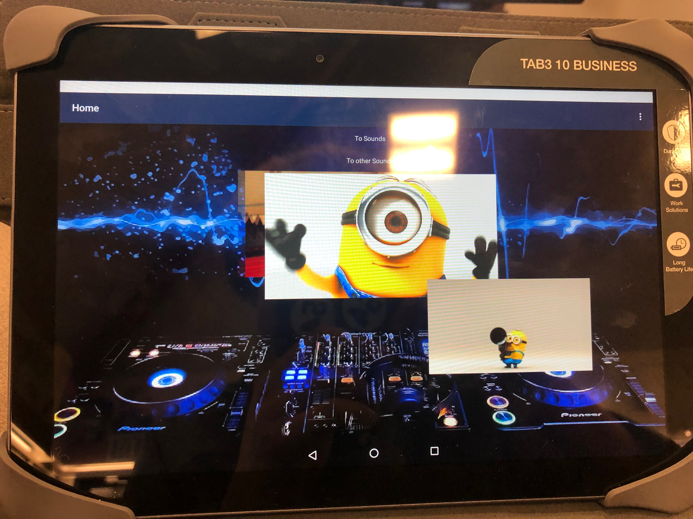
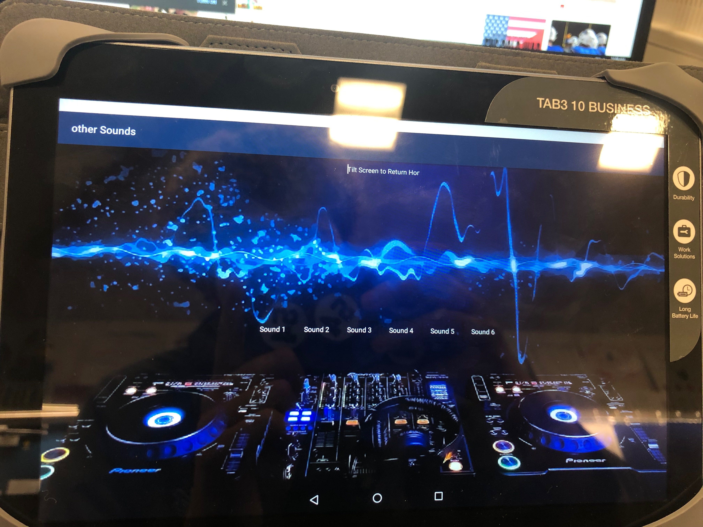
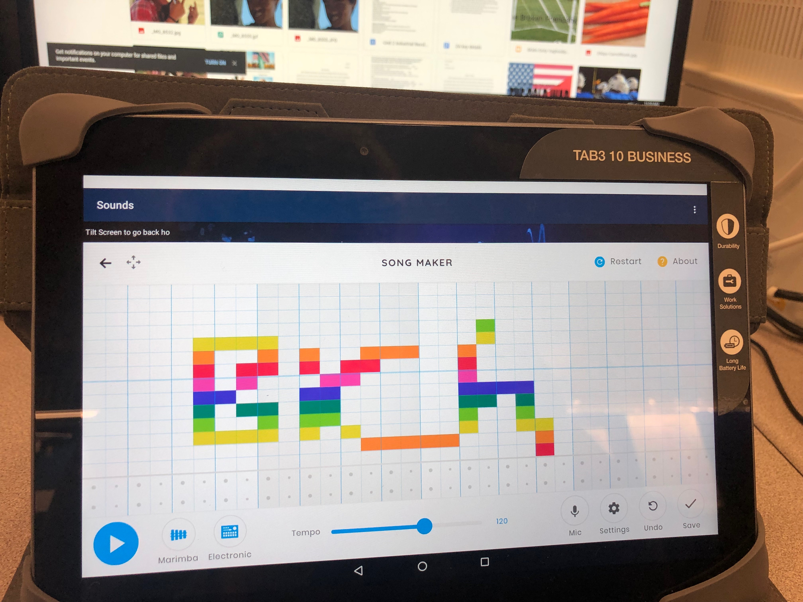
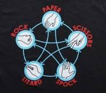

<!doctype html>
<style type="text/css">
BODY {overflow-x: hidden;}
</style>


<script language="JavaScript1.2">
<!--

/*
Submitted by Marcin Wojtowicz [one_spook@hotmail.com] 
Featured on JavaScript Kit (http://javascriptkit.com)
Modified by JK to be IE7+/ Firefox compatible
For this and over 400+ free scripts, visit http://javascriptkit.com
*/

var trailLength = 800 // The length of trail (8 by default; put more for longer "tail")
var path = "Banzai.gif" // URL of your image

var standardbody=(document.compatMode=="CSS1Compat")? document.documentElement : document.body //create reference to common "body" across doctypes
var i,d = 0

function initTrail() { // prepares the script
	images = new Array() // prepare the image array
	for (i = 0; i < parseInt(trailLength); i++) {
		images[i] = new Image()
		images[i].src = path
	}
	storage = new Array() // prepare the storage for the coordinates
	for (i = 0; i < images.length*3; i++) {
		storage[i] = 0
	}
	for (i = 0; i < images.length; i++) { // make divs for IE and layers for Navigator
		document.write('<div id="obj' + i + '" style="position: absolute; z-Index: 100; height: 0; width: 0"></div>')
	}
	trail()
}
function trail() { // trailing function
	for (i = 0; i < images.length; i++) { // for every div/layer
		document.getElementById("obj" + i).style.top = storage[d]+'px' // the Y-coordinate
		document.getElementById("obj" + i).style.left = + storage[d+1]+'px' // the X-coordinate
		d = d+2
	}
	for (i = storage.length; i >= 2; i--) { // save the coordinate for the div/layer that's behind
		storage[i] = storage[i-2]
	}
	d = 0 // reset for future use
	var timer = setTimeout("trail()",10) // call recursively 
}
function processEvent(e) { // catches and processes the mousemove event 
	if (window.event) { // for IE
		storage[0] = window.event.y+standardbody.scrollTop+10
		storage[1] = window.event.x+standardbody.scrollLeft+10
	} else {
		storage[0] = e.pageY+12
		storage[1] = e.pageX+12
	}
}

	initTrail() 
	document.onmousemove = processEvent // start capturing

//-->
</script>
</html>


<center><body>  
<a href="index.html">Home</a>    <a href="portfolio.html">Portfolio</a> 
<a href="about me.html">About me</a>  <h1>This is my Portfolio Page!</h1>  
    <br>  
<a target="_blank" href="https://scratch.mit.edu">   
    </a>  </body></html>
<body style="background-color:gold;">
    <h1 style="border:2px solid yellow;">first heading</h1>

   
   </a>
    <p>This is my scratch game. It is a parking game that you use Nami's Camri and try not to crash into shit.</p>
    <iframe allowtransparency="true" width="485" height="402" src="//scratch.mit.edu/projects/embed/286690622/?autostart=false" frameborder="0" allowfullscreen></iframe>
	  </body>
	</html>

<br>
      
   
   <br>
   <br>
    <p1>This is the home area of the app. it be 3 minionz gifz floating around. i used blocks to restrict where the picture travels</p1>
    <br>
          <br>
   <p2> this is the portion of the app that makes minion sounds. It consists of some buttons that make sounds and the individual blocks are roughly the same.</p2>
    
<br>

<br>
<p3> this is the main part of the whole app. to make we used a webviewer</p3>

<p> Here is the interactive story I created with my partner, Wifi Thief.</p>
<br>

<br>This is an Interactive story about a Wifi Thief. the story follows Cameron against Molly, the Wifi Thief. There are four different endings but all of them end with a semi depressing tone. Each audience member must pick the right choices for Cameron to make in order to keep him alive longer. please enjoy the story WIFI Thief
<iframe height="400px" width="100%" src="https://repl.it/@ClaireAhn/Interactive-Fiction-10?lite=true" scrolling="no" frameborder="no" allowtransparency="true" allowfullscreen="true" sandbox="allow-forms allow-pointer-lock allow-popups allow-same-origin allow-scripts allow-modals"></iframe>
<br>

<p>This is Python Rock, Paper, Scissors, Lizard, Spock. You are greeted by the computer and then you pick your choice of "weapon". The computer then randomly picks a weapon and the two battle it out. The winner recieves a good message while the loser gets the opposite.</p>
<br>

<iframe height="400px" width="100%" src="https://repl.it/@RicoKido_Doty/Rock-Paper-Scissors-Lizard-Spock-3?lite=true" scrolling="no" frameborder="no" allowtransparency="true" allowfullscreen="true" sandbox="allow-forms allow-pointer-lock allow-popups allow-same-origin allow-scripts allow-modals"></iframe>


<video width="400" controls>
  <source src="NumpyVideo.mp4" type="video/mp4">
  <source src="NumpyVideo.ogg" type="video/ogg">
  Your browser does not support HTML5 video.
</video>

<p>
Video courtesy of 
<a href="https://www.bigbuckbunny.org/" target="_blank">Big Buck Bunny</a>.
</p>


</center>

